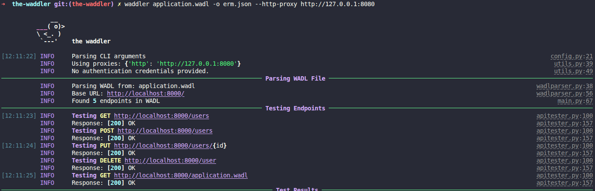
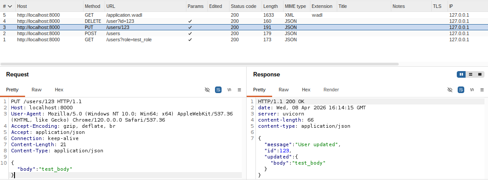

The WADLer: WADL I do with these files?
Background⌗
On a recent external engagement I discovered an API with an exposed application.wadl file while digging through Nuclei results. The file contained definitions for over 150 API endpoints, more than I could easily test by hand.
Web Application Description Language (WADL) files contain XML definitions for REST APIs. They’re similar to OpenAPI JSON files, WSDL files, and other API definition files.
An example WADL file:
<application xmlns="http://wadl.dev.java.net/2009/02">
<resources base="http://localhost:8000/">
<resource path="users">
<method name="GET">
<request>
<param name="role" required="true" style="query" type="string"/>
<representation mediaType="application/json"/>
</request>
<response status="200">
<representation mediaType="application/json"/>
</response>
</method>
</resource>
<resource path="users">
<method name="POST">
<request>
<param name="body" required="true" style="body" type="string"/>
<representation mediaType="application/json"/>
</request>
<response status="200">
<representation mediaType="application/json"/>
</response>
</method>
</resource>
<resource path="users/{id}">
<method name="PUT">
<request>
<param name="id" required="true" style="template" type="int"/>
<param name="body" required="true" style="body" type="string"/>
<representation mediaType="application/json"/>
</request>
<response status="200">
<representation mediaType="application/json"/>
</response>
</method>
</resource>
<resource path="user">
<method name="DELETE">
<request>
<param name="id" required="true" style="query" type="int"/>
<representation mediaType="application/json"/>
</request>
<response status="200">
<representation mediaType="application/json"/>
</response>
</method>
</resource>
<resource path="application.wadl">
<method name="GET">
<request>
<representation mediaType="application/json"/>
</request>
<response status="200">
<representation mediaType="application/json"/>
</response>
</method>
</resource>
</resources>
</application>
Although there is existing tooling for automatically testing APIs from WSDL and OpenAPI files, I was unable to find anything existing to parse and test APIs from WADLs.
The WADLer⌗
The WADLer was created to fill this gap and allow for the quick and easy testing of API endpoints from WADL files. It parses a remote or local WADL file, identifies all endpoints, and sends a test request with appropriate content. This can be helpful in quickly identifying interesting API endpoints and endpoints lacking authentication requirements.

The WADLer supports the use of web proxies and can generate a JSON report outlining all requests made and their results.

Example JSON report:
[
{
"method": "GET",
"url": "http://localhost:8000/users",
"status_code": 200,
"reason": "OK",
"response_time": 0.006547,
"response_size": 48,
"response_body": {
"message": "Fetched users",
"filter": "test_role"
}
},
{
"method": "POST",
"url": "http://localhost:8000/users",
"status_code": 200,
"reason": "OK",
"response_time": 0.004864,
"response_size": 54,
"response_body": {
"message": "User created",
"user": {
"body": "test_body"
}
}
},
{
"method": "PUT",
"url": "http://localhost:8000/users/123",
"status_code": 200,
"reason": "OK",
"response_time": 0.003647,
"response_size": 66,
"response_body": {
"message": "User updated",
"id": 123,
"updated": {
"body": "test_body"
}
}
},
]
You can then use jq to filter results and obtain only successful API requests:
# Pull out full info
jq '[.[] | select(.status_code == 200).url]' output.json
# Pull out URLs only
jq '[.[] | select(.status_code == 200).url]' output.json
Closing⌗
WADL files are valuable pieces of enticement information that can provide details on API endpoints without fuzzing. Using The WADLer, you can quickly identify interesting API endpoints and endpoints lacking authentication.
Source code for The WADLer can be found here.